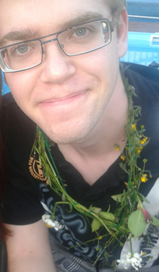

Vad gör jag?
-
Mitt namn är Joakim Nilsson och har ett starkt intresse inom it världen.
Förutom detta älskar jag att spela fotboll lira gura samt att driva min
förening Lanparty där vi hyr olika lokaler och bjuder sedan in
folk för att tävla inom olika dataspel för att se vem som är bäst!

-
Jag besitter även bred kunskap inom "media" produktion då jag jobbat mycket
Adobe after effects, Maya, Photoshop, Dreamweaver, Fl studio, Traktor 2 m.m.
Jobb/praktik erfarenheter
- Anordnat en monter på Dreamhack Summer 2013
Alien Arena
- Praktiserat på världens största internet café
Inferno online
- Driver föreningen Lanparty i kalmar hemsida inom kort
- Ljud / ljus uppsättning på Strand hotel i borgholm